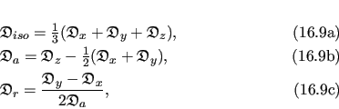
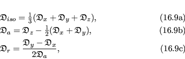
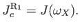
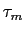
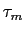

Next: 8.5 The value, gradient, Up: 8. Values, gradients, and Previous: 8.3 The four parameter Contents Index
For the single residue models of
 and
and
 the chi-squared value
the chi-squared value  which is optimised is simply Equation (8.15) on page
which is optimised is simply Equation (8.15) on page ![[*]](crossref.png) in which the relaxation data is that of residue 
. However for the global models
in which the relaxation data is that of residue 
. However for the global models
 and
and
 in which all selected residues are involved the optimised chi-squared value is the sum of those for each residue,
in which all selected residues are involved the optimised chi-squared value is the sum of those for each residue,
 |
(theparentequation.10) |
where is the residue index and  is the total number of residues used in the analysis. This is equivalent to Equation (8.15) when the index ranges over the relaxation data of all selected residues.
![\includegraphics[width=0.9\textwidth, bb=143 399 494 777]{images/gradient.eps.gz}](img242.png) |
The construction of the gradient is significantly different for the models
 ,
,
 ,
,
 , and
, and
 . In Figure 8.1 the construction of the chi-squared gradient
. In Figure 8.1 the construction of the chi-squared gradient
 for the global model
for the global model
 is demonstrated. In this case
is demonstrated. In this case
where
 is the vector of partial derivatives of the chi-squared equation
is the vector of partial derivatives of the chi-squared equation  for the residue
. The length of this vector is
for the residue
. The length of this vector is
| (theparentequation.12) |
with each position of the vector  equal to
equal to
 where each
where each  is a parameter of the model.
is a parameter of the model.
The construction of the gradient
 for the model
for the model
 is simply a subset of that of
is simply a subset of that of
 . This is demonstrated in Figure 8.1 by simply taking the component of the gradient
. This is demonstrated in Figure 8.1 by simply taking the component of the gradient
 denoted by the symbol
denoted by the symbol
 (the orange blocks) and summing these for all residues. This sum is given by (8.11) and
(the orange blocks) and summing these for all residues. This sum is given by (8.11) and
| (theparentequation.13) |
For the parameter set
 , which consists of the local 
parameter and the model-free parameters of a single residue, the gradient
, which consists of the local 
parameter and the model-free parameters of a single residue, the gradient
 for the residue
is simply the combination of the single orange block and single yellow block of the index
(Figure 8.1).
for the residue
is simply the combination of the single orange block and single yellow block of the index
(Figure 8.1).
The model-free parameter set
 is even simpler. In Figure 8.1 the gradient
is even simpler. In Figure 8.1 the gradient
 is simply the vector denoted by the single yellow block for the residue
.
is simply the vector denoted by the single yellow block for the residue
.
![\includegraphics[width=0.8\textwidth, bb=61 11 585 789]{images/kite.eps.gz}](img256.png) |
The construction of the Hessian for the models
 ,
,
 ,
,
 , and
, and
 is very similar to the procedure used for the gradient. The chi-squared Hessian for the global models
is very similar to the procedure used for the gradient. The chi-squared Hessian for the global models
 and
and
 is
is
Figure 8.2 demonstrates the construction of the full Hessian for the model
 . The Hessian for the model
. The Hessian for the model
 is the sum of all the red blocks. The Hessian for the model
is the sum of all the red blocks. The Hessian for the model
 is the combination of the single red block for residue
, the two orange blocks representing the sub-matrices of chi-squared second partial derivatives with respect to the diffusion parameter
is the combination of the single red block for residue
, the two orange blocks representing the sub-matrices of chi-squared second partial derivatives with respect to the diffusion parameter
 and the model-free parameter
and the model-free parameter
 , and the single yellow block for that residue. The Hessian for the model-free model
, and the single yellow block for that residue. The Hessian for the model-free model
 is simply the sub-matrix for the residue
coloured yellow.
is simply the sub-matrix for the residue
coloured yellow.